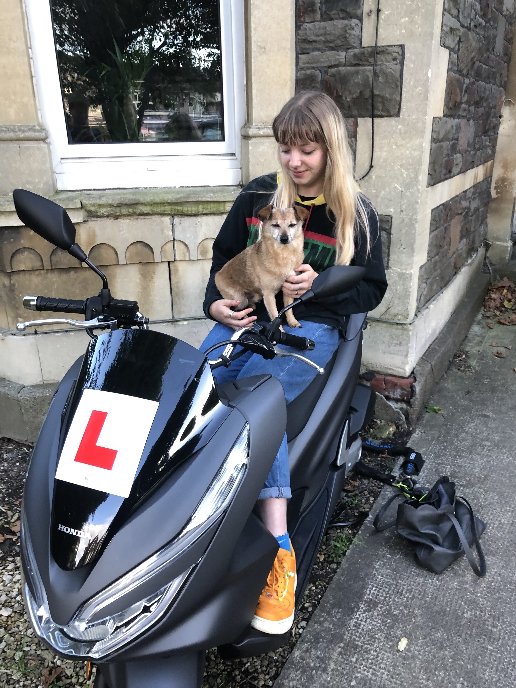
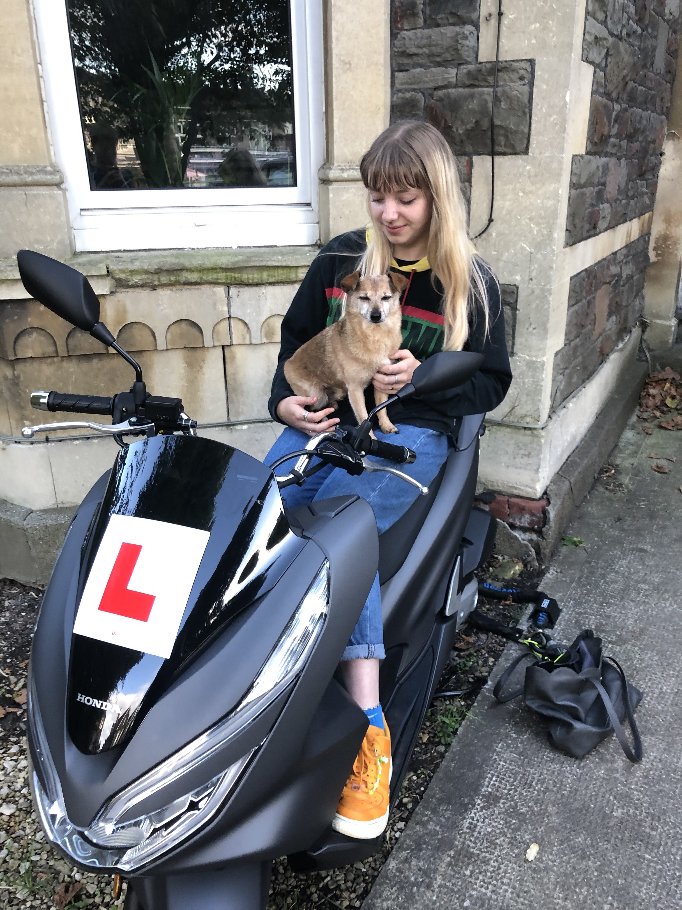

Pablo Escobar is my cat. He is 4, and very big and fluffy.
Spider is my dog, she's a 12 year old labradoodle.

TJ is my best friend, who I used to dogsit every weekday, unfortunately he moved to London so I don't see him much. TJ loves to go in bags.
 


Max is my girlfriend's puppy, a very sweet miniature shnauzer.
Boo and Indiana